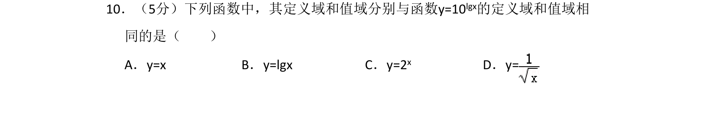
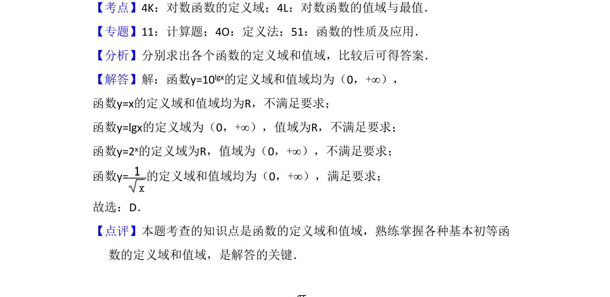

考点：对数函数的定义域 对数函数的值域 函数定义域 函数值域

比较函数定义域和值域，判断与y=10^{lgx}相同的函数

📄 原 PDF 第 7 页：
素材/真题/吉林/2008-2024·（吉林）数学高考真题/2016年高考数学试卷（文）（新课标Ⅱ）（解析卷）.pdf
10．（5分）下列函数中，其定义域和值域分别与函数y=10lgx的定义域和值域相 同的是（ ） A．y=x B．y=lgx C．y=2 x D．y=
【考点】4K：对数函数的定义域；4L：对数函数的值域与最值．菁优网版权所有 【专题】11：计算题；4O：定义法；51：函数的性质及应用． 【分析】分别求出各个函数的定义域和值域，比较后可得答案． 【解答】解：函数y=10lgx的定义域和值域均为（0，+∞）， 函数y=x的定义域和值域均为R，不满足要求； 函数y=lgx的定义域为（0，+∞），值域为R，不满足要求； 函数y=2x的定义域为R，值域为（0，+∞），不满足要求； 函数y=的定义域和值域均为（0，+∞），满足要求； 故选：D． 【点评】本题考查的知识点是函数的定义域和值域，熟练掌握各种基本初等函 数的定义域和值域，是解答的关键．